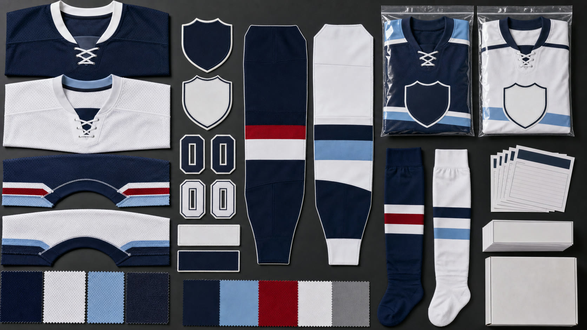

Skater, Goalie, and Practice Jerseys
- Wide-cut skater jerseys, separate goalie-cut jerseys, lightweight practice versions, and supporter variants
- Define garment measurements relative to the buyer's approved layering setup; protective equipment is outside this apparel scope
- Keep home, away, alternate, practice, youth, adult, skater, goalie, and supporter specifications distinct